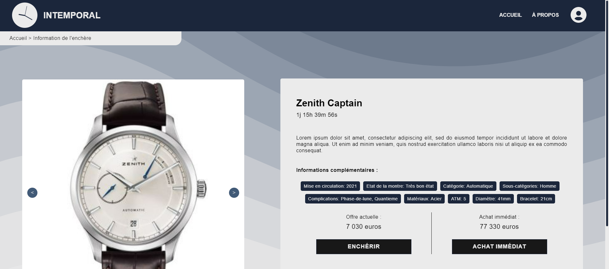
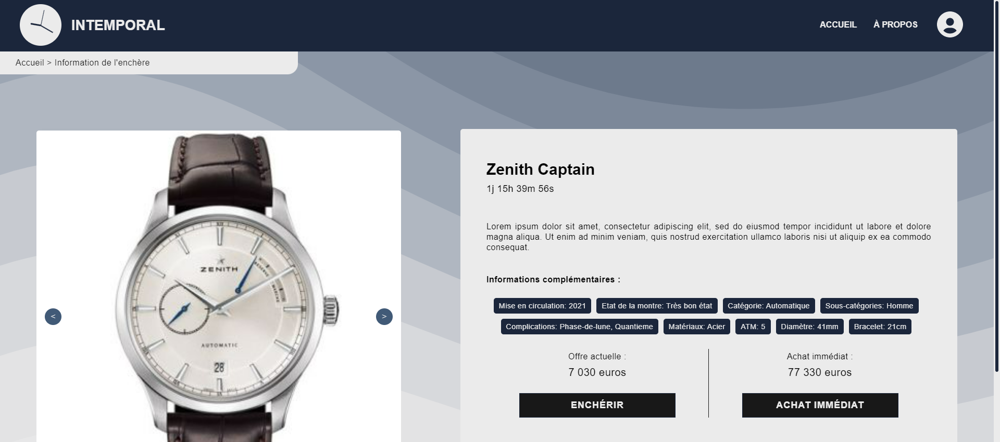
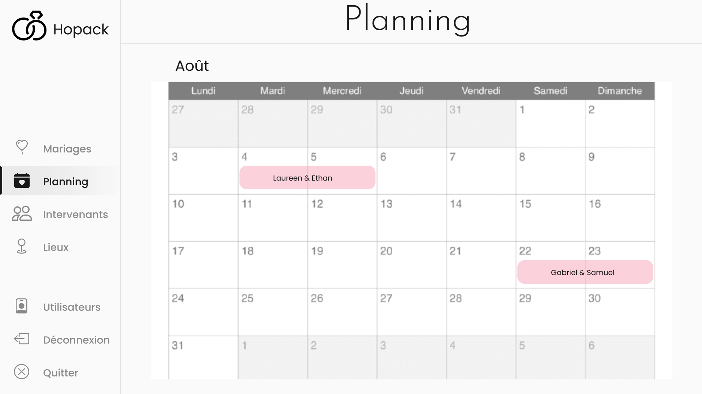
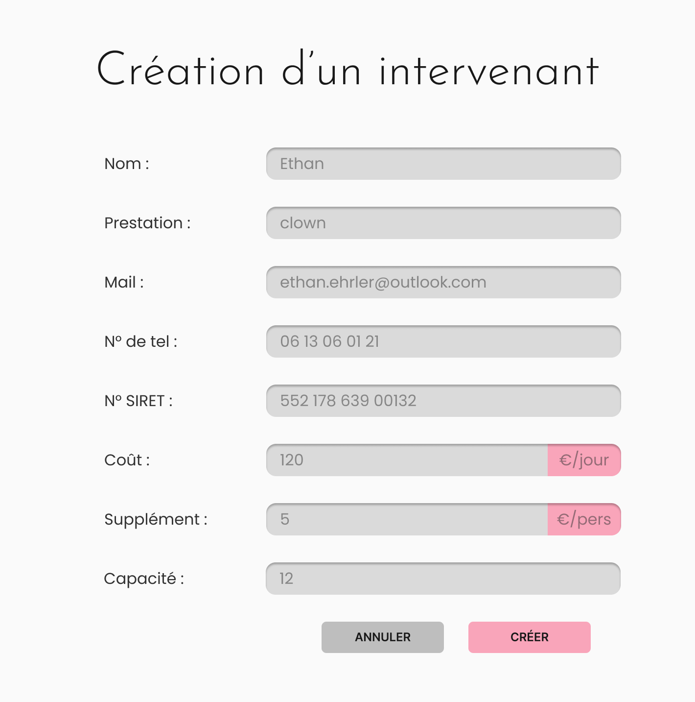
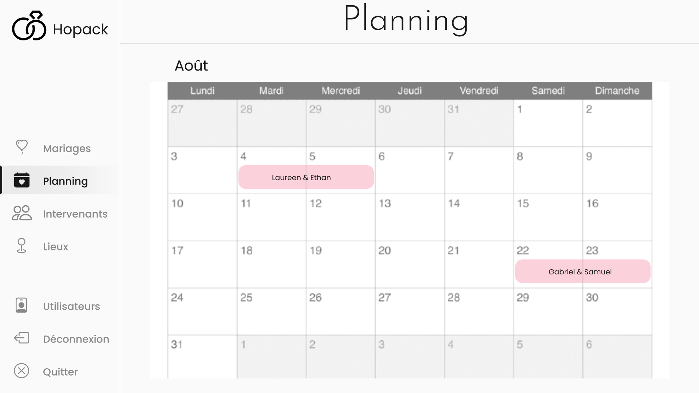
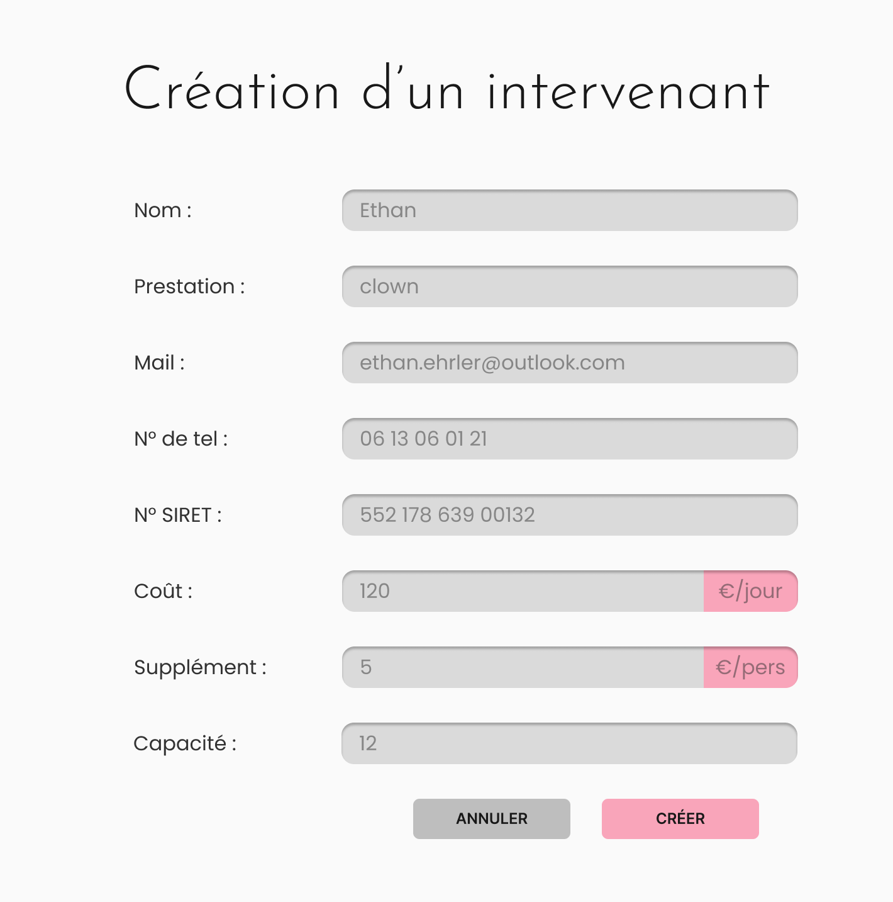
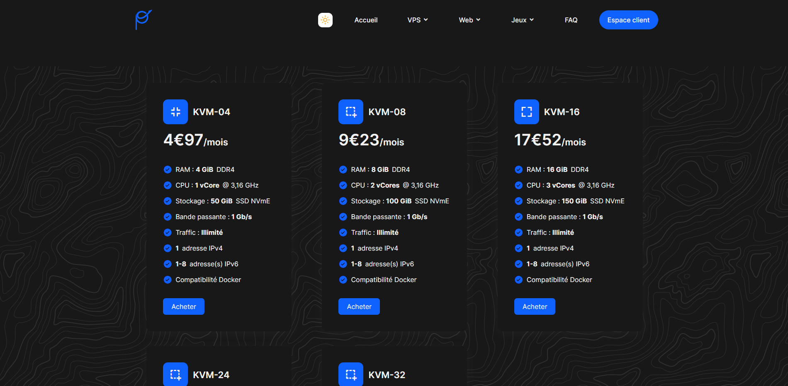
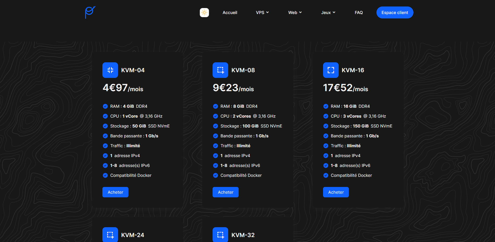

Projet NASApi, 2023
A l'aide d'un collègue, nous avons créé un site utilisant une API de la NASA permettant de rechercher des images. Ce site permet de découvir différentes images de la NASA en cherchant une mission, un photographe ou bien en entrant un mot clé. Les technologies utilisées sont JS, HTML et CSS.
Lien du site : NASApi
Projet Road game, 2023
J'ai décidé de créer une sorte de mini jeu où l'on peu contrôler une voiture sur une route. On peut également changer la couleur de la voiture, du fond et faire apparaitre des caisses à l'aide d'un bouton. Du JS, HTML et CSS ont été utilisés.
Lien du site : road game
Projet Intemporal, 2023
J'ai eu l'occasion de développer au cours de l'année 2023 un site de vente aux enchères de montres nommé Intemporal au sein d'une équipe de 6 personnes. Ce projet a été réalisé à l'IUT 2 de Grenoble. J'ai été en charge du maquettage ainsi que de la réalisation HTML, CSS et JavaScript de notre site. J'ai donc réalisé le design du site ainsi que celui du dossier de conception. J'ai travaillé sur les critères ergonomiques de Bastien et Scapin afin de garantir une bonne expérience utilisateur, par exemple vérifier les contrastes à l'aide d'Adobe color. J'ai également eu l'occasion de faire passer des tests utilisateurs à des personnes extérieures à notre équipe afin de pouvoir améliorer notre site, notamment à l'aide de questionnaires SUS qui ont été passé avec brio.
Le dossier de conception du projet est disponible ici : dossier de conception
Voici quelques captures d'écrans de ce que j'ai pu réaliser au cours de ce projet :
 



Le back-end de notre site a été développé en PHP et la base de données quant à elle était en Sqlite. Nous avons utilisé des websocket afin de pouvoir enchérir en temps réel. Nous avons également mis l'accent sur la sécurité en hachant et salant les mots de passe à l'aide d'argon2 et plus encore. Des tests unitaires ainsi que des tests automatisés à l'aide de Selenium ont été réalisés afin de pouvoir vérifier le bon fonctionnement de notre site.
Ce projet nous a valu un prix du jury de l'IUT Informatique de Grenoble pour la qualité de notre prototype :
Projet Me, 2022
Date de réalisation : 2022
J'ai décidé de créer un premier site internet récapitulant mes compétences ainsi que mes projets lors de l'année 2022 en HTML, CSS et JavaScript.
Voici le lien de celui-ci : Mon site
Projet Hopack, 2022
Lors de l'année 2022, nous avons développé une application en JavaFx et CSS afin de faciliter aux professionnels de l'organisation de mariages leur métier. Ce projet a été réalisé en groupe de 6 au sein de l'IUT 2 de Grenoble et j'ai eu l'opportunité d'être chef de projet.
Le dossier IHM que nous avons pu réaliser au cours de ce projet : dossier IHM
Voici quelques vues de notre application :
 



Projet Op Heberg, 2022
En 2022, j'ai eu l'occasion de travailler avec un autre développeur web avec lequel j'ai réalisé une petite partie des maquettes ainsi que du code d'un site offrant la possibilité de louer des serveurs. Les maquettes ont été réalisé à l'aide de figma et le front-end en HTML, SCSS et JavaScript.
Voici quelques captures d'écran de ce site :
 

Projet Rent a dev, 2022
J'ai eu l'occasion en 2022 de réaliser en binôme un site web de location de services informatiques qui répondait aux demandes d'un autre binôme. Ce projet a été réalisé à l'IUT Informatique de Grenoble.
Voici une capture d'écran du résultat :
Projet Installation de serveur, 2022
En 2022, j'ai eu l'occasion d'installer un serveur Debian 11 et de réaliser un guide d'installation pour celui-ci au sein de l'IUT Informatique de Grenoble.
Voici le lien de ce guide : guide d'installation
Projet Open Food Facts, 2022
Ce projet a été réalisé en 2022 à l'IUT Informatique de Grenoble en binôme. Celui-ci consistait à triller la base de données d'Open Food Facts en vue de faire des analyses statistiques. PostgreSQL et LaTeX ont été utilisés.
Projet Classification automatique, 2021
En 2021, l'IUT Informatique de Grenoble nous a proposé un projet qui consistait à réaliser une "IA" en Java qui trillait des articles de presse dans des catégories en fonction des mots les composants. Ce projet a été réalisé en binôme.
Voici le rapport qui a découlé de ce projet : rapport
Projet Hardis Group, 2021
L'IUT informatique de Grenoble nous a proposé comme projet en 2021 de réaliser un site web pour une entreprise du numérique. Ce projet a été réalisé en trinôme, ceci est le premier site internet que j'ai eu l'occasion de réaliser.
Voici une capture de ce site :